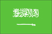
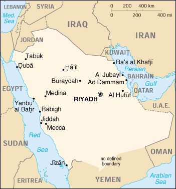

{kind=link}


| Saudi Arabia |  |
|
|  | |
| Introduction |
Background: In 1902 Abdul al-Aziz Ibn SAUD captured Riyadh and set out on a 30-year campaign to unify the Arabian peninsula. In the 1930s, the discovery of oil transformed the country. Following Iraq's invasion of Kuwait in 1990, Saudi Arabia accepted the Kuwaiti royal family and 400,000 refugees while allowing Western and Arab troops to deploy on its soil for the liberation of Kuwait the following year. A burgeoning population, aquifer depletion, and an economy largely dependent on petroleum output and prices are all major governmental concerns.
| Geography |
Location: Middle East, bordering the Persian Gulf and the Red Sea, north of Yemen
Geographic coordinates: 25 00 N, 45 00 E
Map references: Middle East
Area:
total:
1,960,582 sq km
land:
1,960,582 sq km
water:
0 sq km
Area - comparative: slightly more than one-fifth the size of the US
Land boundaries:
total:
4,415 km
border countries:
Iraq 814 km, Jordan 728 km, Kuwait 222 km, Oman 676 km, Qatar 60 km, UAE 457 km, Yemen 1,458 km
Coastline: 2,640 km
Maritime claims:
contiguous zone:
18 nm
continental shelf:
not specified
territorial sea:
12 nm
Climate: harsh, dry desert with great extremes of temperature
Terrain: mostly uninhabited, sandy desert
Elevation extremes:
lowest point:
Persian Gulf 0 m
highest point:
Jabal Sawda' 3,133 m
Natural resources: petroleum, natural gas, iron ore, gold, copper
Land use:
arable land:
2%
permanent crops:
0%
permanent pastures:
56%
forests and woodland:
1%
other:
41% (1993 est.)
Irrigated land: 4,350 sq km (1993 est.)
Natural hazards: frequent sand and dust storms
Environment - current issues: desertification; depletion of underground water resources; the lack of perennial rivers or permanent water bodies has prompted the development of extensive seawater desalination facilities; coastal pollution from oil spills
Environment - international agreements:
party to:
Climate Change, Desertification, Endangered Species, Hazardous Wastes, Law of the Sea, Ozone Layer Protection
signed, but not ratified:
none of the selected agreements
Geography - note: extensive coastlines on Persian Gulf and Red Sea provide great leverage on shipping (especially crude oil) through Persian Gulf and Suez Canal
| People |
Population:
22,023,506
note:
includes 5,360,526 non-nationals (July 2000 est.)
Age structure:
0-14 years:
43% (male 4,781,695; female 4,607,038)
15-64 years:
55% (male 7,093,567; female 4,969,848)
65 years and over:
2% (male 309,638; female 261,720) (2000 est.)
Population growth rate: 3.28% (2000 est.)
Birth rate: 37.47 births/1,000 population (2000 est.)
Death rate: 6.02 deaths/1,000 population (2000 est.)
Net migration rate: 1.36 migrant(s)/1,000 population (2000 est.)
Sex ratio:
at birth:
1.05 male(s)/female
under 15 years:
1.04 male(s)/female
15-64 years:
1.43 male(s)/female
65 years and over:
1.18 male(s)/female
total population:
1.24 male(s)/female (2000 est.)
Infant mortality rate: 52.9 deaths/1,000 live births (2000 est.)
Life expectancy at birth:
total population:
67.77 years
male:
66.11 years
female:
69.51 years (2000 est.)
Total fertility rate: 6.3 children born/woman (2000 est.)
Nationality:
noun:
Saudi(s)
adjective:
Saudi or Saudi Arabian
Ethnic groups: Arab 90%, Afro-Asian 10%
Religions: Muslim 100%
Languages: Arabic
Literacy:
definition:
age 15 and over can read and write
total population:
62.8%
male:
71.5%
female:
50.2% (1995 est.)
| Government |
Country name:
conventional long form:
Kingdom of Saudi Arabia
conventional short form:
Saudi Arabia
local long form:
Al Mamlakah al Arabiyah as Suudiyah
local short form:
Al Arabiyah as Suudiyah
Data code: SA
Government type: monarchy
Capital: Riyadh
Administrative divisions: 13 provinces (mintaqat, singular - mintaqah); Al Bahah, Al Hudud ash Shamaliyah, Al Jawf, Al Madinah, Al Qasim, Ar Riyad, Ash Sharqiyah (Eastern Province), 'Asir, Ha'il, Jizan, Makkah, Najran, Tabuk
Independence: 23 September 1932 (unification)
National holiday: Unification of the Kingdom, 23 September (1932)
Constitution: governed according to Shari'a (Islamic law); the Basic Law that articulates the government's rights and responsibilities was introduced in 1993
Legal system: based on Islamic law, several secular codes have been introduced; commercial disputes handled by special committees; has not accepted compulsory ICJ jurisdiction
Suffrage: none
Executive branch:
chief of state:
King and Prime Minister FAHD bin Abd al-Aziz Al Saud (since 13 June 1982); Crown Prince and First Deputy Prime Minister ABDALLAH bin Abd al-Aziz Al Saud (half-brother to the monarch, heir to the throne since 13 June 1982, regent from 1 January to 22 February 1996); note - the monarch is both the chief of state and head of government
head of government:
King and Prime Minister FAHD bin Abd al-Aziz Al Saud (since 13 June 1982); Crown Prince and First Deputy Prime Minister ABDALLAH bin Abd al-Aziz Al Saud (half-brother to the monarch, heir to the throne since 13 June 1982, regent from 1 January to 22 February 1996); note - the monarch is both the chief of state and head of government
cabinet:
Council of Ministers is appointed by the monarch and includes many royal family members
elections:
none; the monarch is hereditary
Legislative branch: a consultative council (90 members and a chairman appointed by the monarch for four-year terms)
Judicial branch: Supreme Council of Justice
Political parties and leaders: none allowed
International organization participation: ABEDA, AfDB, AFESD, AL, AMF, BIS, CCC, ESCWA, FAO, G-19, G-77, GCC, IAEA, IBRD, ICAO, ICC, ICRM, IDA, IDB, IFAD, IFC, IFRCS, ILO, IMF, IMO, Inmarsat, Intelsat, Interpol, IOC, ISO, ITU, NAM, OAPEC, OAS (observer), OIC, OPCW, OPEC, UN, UNCTAD, UNESCO, UNIDO, UPU, WFTU, WHO, WIPO, WMO, WTrO (applicant)
Diplomatic representation in the US:
chief of mission:
Ambassador BANDAR bin Sultan bin Abd al-Aziz Al Saud
chancery:
601 New Hampshire Avenue NW, Washington, DC 20037
telephone:
[1] (202) 342-3800
consulate(s) general:
Houston, Los Angeles, and New York
Diplomatic representation from the US:
chief of mission:
Ambassador Wyche FOWLER, Jr.
embassy:
Collector Road M, Diplomatic Quarter, Riyadh
mailing address:
American Embassy Riyadh, Unit 61307, APO AE 09803-1307; International Mail: P. O. Box 94309, Riyadh 11693
telephone:
[966] (1) 488-3800
FAX:
[966] (1) 488-7360
consulate(s) general:
Dhahran, Jiddah (Jeddah)
Flag description: green with large white Arabic script (that may be translated as There is no God but God; Muhammad is the Messenger of God) above a white horizontal saber (the tip points to the hoist side); green is the traditional color of Islam
| Economy |
Economy - overview: This is an oil-based economy with strong government controls over major economic activities. Saudi Arabia has the largest reserves of petroleum in the world (26% of the proved total), ranks as the largest exporter of petroleum, and plays a leading role in OPEC. The petroleum sector accounts for roughly 75% of budget revenues, 40% of GDP, and 90% of export earnings. About 35% of GDP comes from the private sector. Roughly 4 million foreign workers play an important role in the Saudi economy, for example, in the oil and service sectors. Saudi Arabia was a key player in the successful efforts of OPEC and other oil producing countries to raise the price of oil in 1999 to its highest level since the Gulf War by reducing production. Although oil prices are expected to remain relatively high in 2000, Riyadh expects to have a $7.5 billion budget deficit in part because of increased spending for education and other social problems. The government in 1999 announced plans to begin privatizing the electricity companies, which follows the ongoing privatization of the telecommunications company. The government is expected to continue calling for private sector growth to lessen the kingdom's dependence on oil and increase employment opportunities for the swelling Saudi population. Shortages of water and rapid population growth will constrain government efforts to increase self-sufficiency in agricultural products.
GDP: purchasing power parity - $191 billion (1999 est.)
GDP - real growth rate: 1.6% (1999 est.)
GDP - per capita: purchasing power parity - $9,000 (1999 est.)
GDP - composition by sector:
agriculture:
6%
industry:
47%
services:
47% (1998 est.)
Population below poverty line: NA%
Household income or consumption by percentage share:
lowest 10%:
NA%
highest 10%:
NA%
Inflation rate (consumer prices): -1.2% (1999)
Labor force:
7 million
note:
35% of the population in the 15-64 age group is non-national (July 1998 est.)
Labor force - by occupation: agriculture 12%, industry 25%, services 63% (1999 est.)
Unemployment rate: NA%
Budget:
revenues:
$41.9 billion
expenditures:
$49.4 billion, including capital expenditures of $NA (2000 est.)
Industries: crude oil production, petroleum refining, basic petrochemicals, cement, construction, fertilizer, plastics
Industrial production growth rate: 1% (1997 est.)
Electricity - production: 110.132 billion kWh (1998)
Electricity - production by source:
fossil fuel:
100%
hydro:
0%
nuclear:
0%
other:
0% (1998)
Electricity - consumption: 102.423 billion kWh (1998)
Electricity - exports: 0 kWh (1998)
Electricity - imports: 0 kWh (1998)
Agriculture - products: wheat, barley, tomatoes, melons, dates, citrus; mutton, chickens, eggs, milk
Exports: $48 billion (f.o.b., 1999)
Exports - commodities: petroleum and petroleum products 90%
Exports - partners: Japan 17%, US 15%, South Korea 11%, Singapore 8%, India 4%, France 4% (1998)
Imports: $28 billion (f.o.b., 1999)
Imports - commodities: machinery and equipment, foodstuffs, chemicals, motor vehicles, textiles
Imports - partners: US 21%, UK 9%, Japan 9%, Germany 6%, France 5%, Italy 4% (1998)
Debt - external: $28 billion (1998 est.)
Economic aid - donor: pledged $100 million in 1993 to fund reconstruction of Lebanon; since 1993, Saudi Arabia has committed $208 million for assistance to the Palestinians
Currency: 1 Saudi riyal (SR) = 100 halalah
Exchange rates: Saudi riyals (SR) per US$1 - 3.7450 (fixed rate since June 1986)
Fiscal year: calendar year
| Communications |
Telephones - main lines in use: 3.1 million (1998)
Telephones - mobile cellular:
1 million
note:
in 1998, the government contracted for the installation of 575,000 additional Group Speciale Mobile (GSM) cellular telephone lines over 15 months to raise the total number of subscribers to more than one million; Riyadh planned to further expand the GSM system in 1999 by adding an additional one million lines (1998)
Telephone system:
modern system
domestic:
extensive microwave radio relay and coaxial and fiber-optic cable systems
international:
microwave radio relay to Bahrain, Jordan, Kuwait, Qatar, UAE, Yemen, and Sudan; coaxial cable to Kuwait and Jordan; submarine cable to Djibouti, Egypt and Bahrain; satellite earth stations - 5 Intelsat (3 Atlantic Ocean and 2 Indian Ocean), 1 Arabsat, and 1 Inmarsat (Indian Ocean region)
Radio broadcast stations: AM 43, FM 31, shortwave 2 (1998)
Radios: 6.25 million (1997)
Television broadcast stations: 117 (1997)
Televisions: 5.1 million (1997)
Internet Service Providers (ISPs): 6 (1999)
| Transportation |
Railways:
total:
1,390 km
standard gauge:
1,390 km 1.435-m gauge (448 km double track) (1992)
Highways:
total:
146,524 km
paved:
44,104 km
unpaved:
102,420 km (1997 est.)
Pipelines: crude oil 6,400 km; petroleum products 150 km; natural gas 2,200 km (includes natural gas liquids 1,600 km)
Ports and harbors: Ad Dammam, Al Jubayl, Duba, Jiddah, Jizan, Rabigh, Ra's al Khafji, Mishab, Ras Tanura, Yanbu' al Bahr, Madinat Yanbu' al Sinaiyah
Merchant marine:
total:
70 ships (1,000 GRT or over) totaling 1,071,003 GRT/1,388,802 DWT
ships by type:
cargo 12, chemical tanker 7, container 5, liquified gas 1, livestock carrier 3, passenger 1, petroleum tanker 17, refrigerated cargo 4, roll-on/roll-off 12, short-sea passenger 8 (1999 est.)
Airports: 205 (1999 est.)
Airports - with paved runways:
total:
72
over 3,047 m:
31
2,438 to 3,047 m:
13
1,524 to 2,437 m:
23
914 to 1,523 m:
3
under 914 m:
2 (1999 est.)
Airports - with unpaved runways:
total:
133
2,438 to 3,047 m:
4
1,524 to 2,437 m:
77
914 to 1,523 m:
39
under 914 m:
13 (1999 est.)
Heliports: 4 (1999 est.)
| Military |
Military branches: Land Force (Army), Navy, Air Force, Air Defense Force, National Guard, Ministry of Interior Forces (paramilitary)
Military manpower - military age: 17 years of age
Military manpower - availability:
males age 15-49:
5,786,089 (2000 est.)
Military manpower - fit for military service:
males age 15-49:
3,225,809 (2000 est.)
Military manpower - reaching military age annually:
males:
221,026 (2000 est.)
Military expenditures - dollar figure: $18.1 billion (FY97)
Military expenditures - percent of GDP: 12% (FY97)
| Transnational Issues |
Disputes - international: large section of boundary with Yemen not defined; location and status of boundary with UAE is not final, de facto boundary reflects 1974 agreement; Kuwaiti ownership of Qaruh and Umm al Maradim islands is disputed by Saudi Arabia; June 1999 agreement has furthered the goal of definitively establishing the border with Qatar
Illicit drugs: death penalty for traffickers; increasing consumption of heroin and cocaine